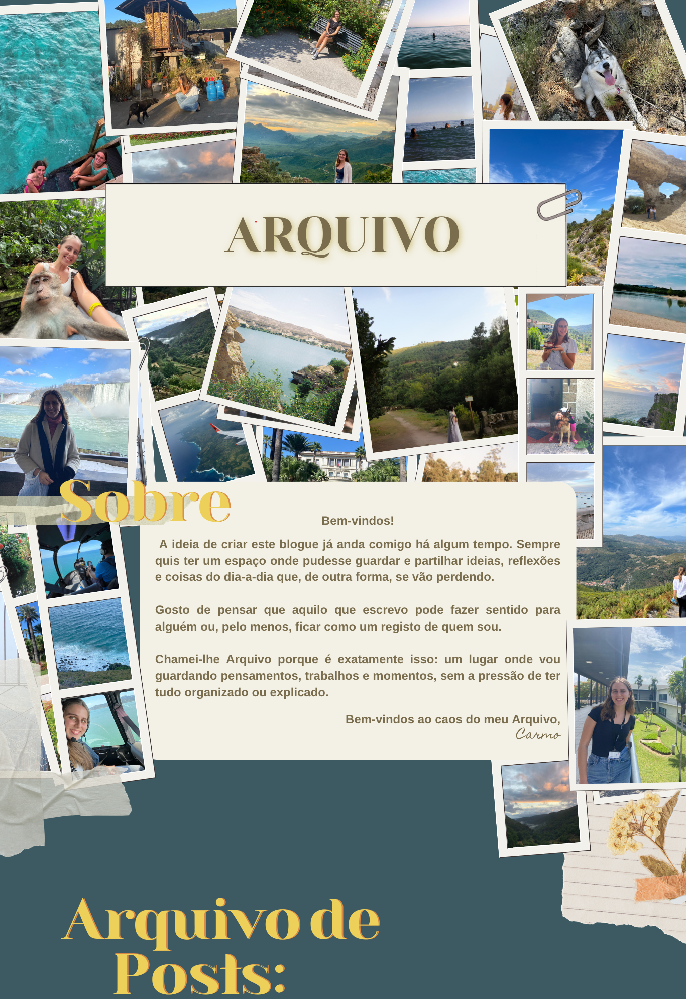
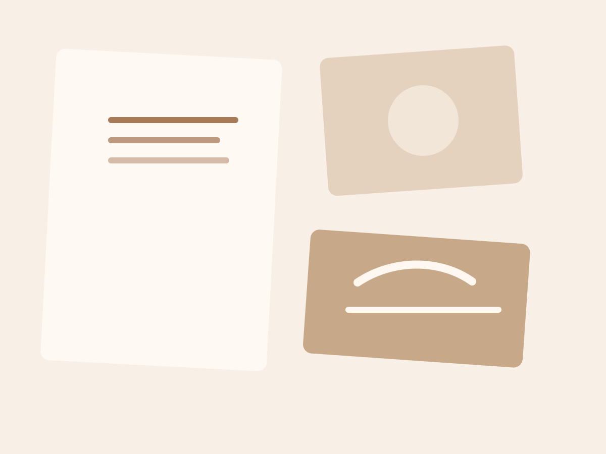
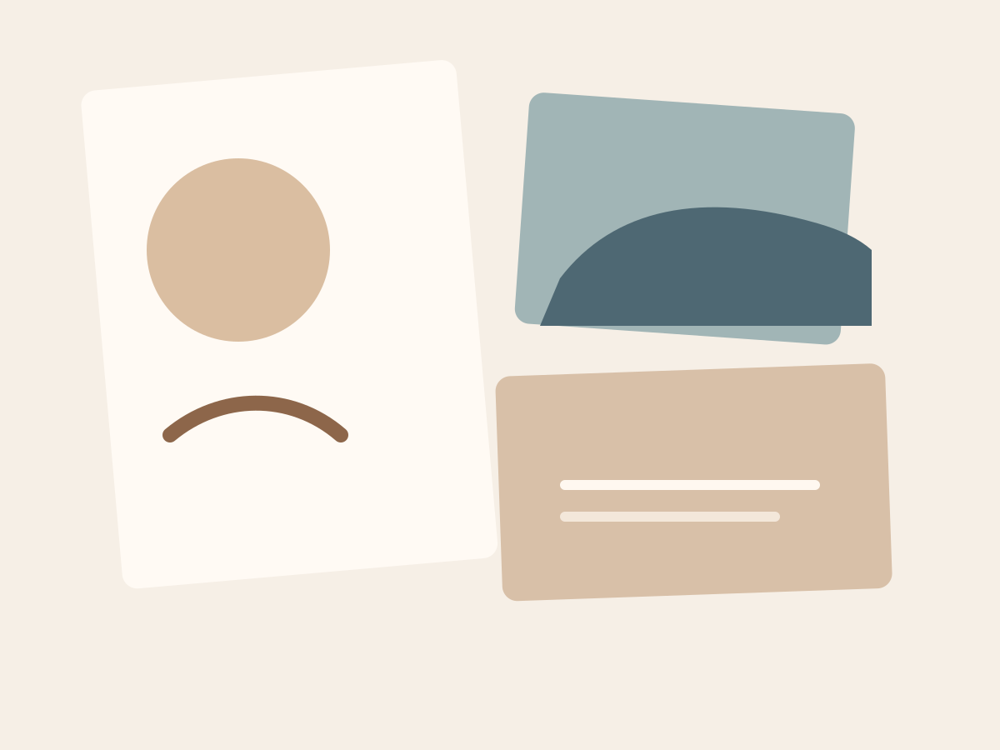

Um Mundo de Cocktails
O meu Top 5 de cocktails pelo mundo — da Austrália aos EUA.
Ler mais
A Vida é Bela
“Esta é uma história simples, mas não daquelas fáceis de contar. Como numa fábula, há tristeza, há deslumbramento e felicidade.”
Ler mais
Faculdade: dois cursos, zero certezas
Uma reflexão sobre as escolhas no final do secundário, a entrada em Direito e a decisão de iniciar Estudos Gerais para não deixar interesses por explorar.
Ler mais
A difícil arquitetura de uma sociedade justa
Será a distribuição igual da riqueza uma violação da liberdade individual?
Ler mais
Listas de Agosto
Ideias soltas, leituras queridas e intenções discretas para atravessar o mês com ternura.
Ler mais
Entre Mar e Serra
Um caderno visual sobre contrastes, ar salgado, caminhos altos e o silêncio bom do fim do dia.
Ler mais